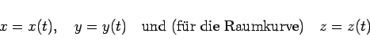
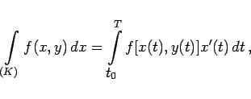
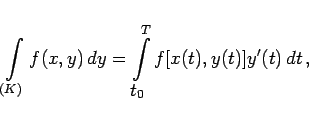
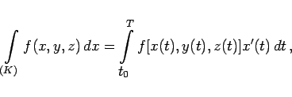
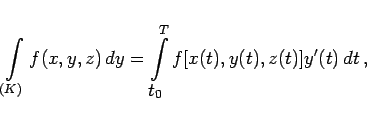
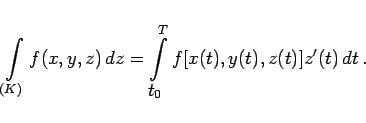

Inhalt Index DeskTop Bronstein

 Integralrechnung Kurvenintegrale Kurvenintegrale 2. Art Berechnung der Kurvenintegrale 2. Art
Integralrechnung Kurvenintegrale Kurvenintegrale 2. Art Berechnung der Kurvenintegrale 2. Art


Mit den Parametergleichungen des Integrationsweges
|  | (8.115) |
ergeben sich die folgenden Formeln: für (8.112a)
|  | (8.116a) |
für (8.113a)
|  | (8.116b) |
für (8.112b)
|  | (8.116c) |
für (8.113b)
|  | (8.116d) |
für (8.114)
|  | (8.116e) |
Dabei sind t0 bzw. T die Werte des Parameters t für den Anfangspunkt A bzw. den Endpunkt B des Bogenstückes. Hier wird im Gegensatz zum Kurvenintegral 1. Art die Forderung t0 < T nicht erhoben.
Hinweis: Bei der Umkehrung des Integrationsweges, d.h., beim Vertauschen der Punkte A und  , ändern die Integrale ihr Vorzeichen.
, ändern die Integrale ihr Vorzeichen.